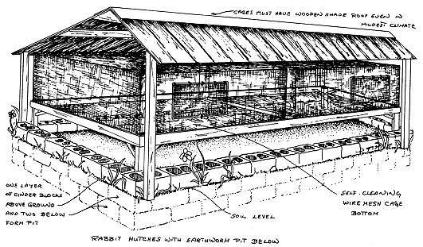

Earthworms
Grow It!
May/June 1972
Earthworms are not usually considered farm livestock and they produce no eggs, milk, meat or other direct benefits . . . except their use as bait, a factor not to be underrated by the small farmer in fishing country. The little wigglers, judiciously harvested from a pit and sold as bait-either to passing customers or to a fish and tackle shop-have kept many a small operator in spending money.
The true value of earthworms, however, lies in their incredible fecundity, constant activity and willingness to till a farmer's soil from below while acting as a tubular manure factory. Burrowing along, eyeless and toothless, worms swallow great amounts of organic material, digest it and expel the remains in the form of castings. Castings of water-soluble compost, that is . . . five times richer in plant-available nitrogen, seven times richer in available phosphates and eleven times richer in available potash than the soil that was ingested.
Earthworms act, Aristotle pointed out, as the soil's intestines While they literally build the earth, their burrowing aerates it . . . permitting better water retention and root penetration through the loosened dirt. And when the little creatures' burrowing lives are over, they will their bodies to the soil in the form of nitrogenous fertilizer.
So what? Doesn't every patch of soil come full of earthworms for the digging? Well, yes and no. Wherever conditions exist that favor earthworms, they'll grow and breed in profusion. This means that any farm which concentrates on building up the organic quality of its soil will have plenty of them. However, on farms that have been run down for years-where the tilth of the soil is poor-the earthworms will be few and far between . . . particularly if the soil is exposed to much drying.
If your farm is in the latter condition, should you try to stock it with worms? On paper the idea sounds good. But unfortunately most of the worms sold by breeders are of the old manure-pile type; they need a certain minimum breeding temperature which makes them unsuitable for field release in the north because of the cold winters. They also need more surface moisture than many a field in the south will provide. The best way, then, to add to your worm population is to build up the organic content of your soil. Improve the soil, and the native earthworm will establish itself in droves and build the land with you.
So much for scattering worms all over your acreage. Harvesting them is something else again . . . and the real reason why worms are mentioned here. Earthworms are normally bred and raised in pits, where they're fed and cared for as if they were real livestock. Which makes sense when you realize that worms sold on a wholesale level are usually handled in batches of at least a thousand. Even the average drop-by-your-farm fisherman gets twenty-five or fifty at a time. That's a lot of digging.
On the other hand, if you raise rabbits, the additional labor and expense of raising worms is minimal. While the returns won't double your tax bracket, they will-if you're near a fishing area-give you enough cash for the necessities you yourself can produce only to a limited extent or not at all.
The great thing about rabbits and worms is their almost symbiotic relationship. Build earthworm pits beneath your rabbit cages and you'll never have to haul away bunny droppings again. To boot, any odor problem you might other wise have is eliminated, as the earthworms dispose of the rabbit manure in short order. The worms won't even require supplemental feeding if the manure supply is fairly constant. Just forget about the pits until you need some of the wigglers. Then, a couple of quick digs with a pitchfork should bring as many as you want to the surface. Don't use a spade or shovel, however: either implement will cut too many worms in half. A pitchfork or potato fork should be used to turn the critters up with minimum damage.

THE PIT
A worm pit is most simply built as four walls of cement blocks or wooden planks. There's no need to add a real floor to the bed; the worms don't like to go deeper than eighteen inches or so. Moles, however, could be a problem. Fat juicy earthworms for breakfast, lunch and dinner are just what moles like best. To nip this problem in the bud, lay a "floor" of half-inch wire mesh in your pit before filling it. Planks laid on the bare ground as snugly as you can fit them will do as well, but they're a waste of lumber unless you have a lot of collapsed barns on your property.
In the more temperate climates, you can save a lot of digging by building your worm bed above-ground. Make the pit walls two cinderblocks high and three to four inches wider than your rabbit hutches (to catch any food falling out the front or back). The length of the pit could go on almost indefinitely, except that practical limitations militate against more than sixty or seventy feet. That's a lot of rabbits, not to mention worms . . . and the whole idea is to cut down on labor. So don't make the bed any longer than your row of rabbit hutches.
The same pit arrangement can be used in colder areas if the pit is partially buried. Make it three cinderblocks deep, two below ground and one above. Worms breed best in temperatures above 40°F, so your pit should be buried far enough to insure against soil temperatures colder than this during the spring and fall.
In the wintertime there won't be many fishermen around, and rabbit odors will be minimal anyway. Your main interest then will be simply keeping enough breeding stock alive until warmer weather. By knowing the depth to which the soil freezes in your area-check with your neighbor or county agent-you can determine how deep to dig the worm beds. You'll want them eight to ten inches deeper than the freezing line.
FILLING THE PIT
Put four to six inches of limestone over the screening in the bottom of your pit. This will assure adequate drainage and neutralize the excessive acidity which sometimes forms in worm beds. Gravel would do for the drainage . . . but will not compensate for the acidity, which could cut your wiggler population.
Lay some boards or more screening on the limestone, so you won't dig it up with the worms, and spread five or six inches of compost-chopped hay, ground corncobs, etc.-on top of the stop-shovel barrier. Some manure (but not chicken droppings!) can be added but there's no need to try to fill the bed in the beginning. As a matter of fact, it can be left almost empty because the worms will fill it soon enough with compost made from the rabbit manure. Toss in your wigglers, let the rabbits defecate . . . and stand back for a population explosion.
The number of worms to start with is a matter of debate. Some suggest as many as ten to fifteen thousand "pit-run" (or mixed) worms . . . or five to ten thousand adult breeders. This is fine if you're after a massive worm crop. If you just want to lessen your rabbit chores and add a little extra fish worm money to your income, though, five hundred to a thousand pit-run worms is plenty to start with . . . no matter how large your pit. While it does take two to tango, each mature worm is bisexual (both male and female) and will lay at least two egg capsules a month. Every capsule will yield from two to twenty young worms which, in turn, will start laying more egg capsules in four months. Meanwhile, the parent stock keeps right on laying and, even under less than ideal conditions, this means a population of a hundred worms could be a population of seventy-five hundred to ten thousand within six months. An order of a couple of hundred wigglers from your nearest supplier will no doubt be all the start you'll need.
UPKEEP
Earthworm pit maintenance is simple. Merely check the bed once in a while to see that the compost stays moist. Pits shaded by rabbit hutches seldom become exceptionally dry and usually need only an occasional sprinkling. Merely emptying the rabbits' water bottles into the bed when giving the animals fresh water will often do the trick. It may also be necessary to fork over the topsoil occasionally (to keep it from forming a crust) until the worm population expands sufficiently to handle that job.
HARVESTING
Just dig the worms up (remember to use a pronged fork to minimize injury) . . . and don't forget the second harvest of rabbit-earthworm compost. Once started, the bunnies and the worms will keep the level of that first-class, ultra-rich humus rising in the bins. When it's six inches from the top of the bed's walls, fork out the fertilizer and spread it on your garden. You can even turn a tidy profit selling the compost-either bagged or in bulk-to a florist for use as quality potting soil.
|
 |
|
|